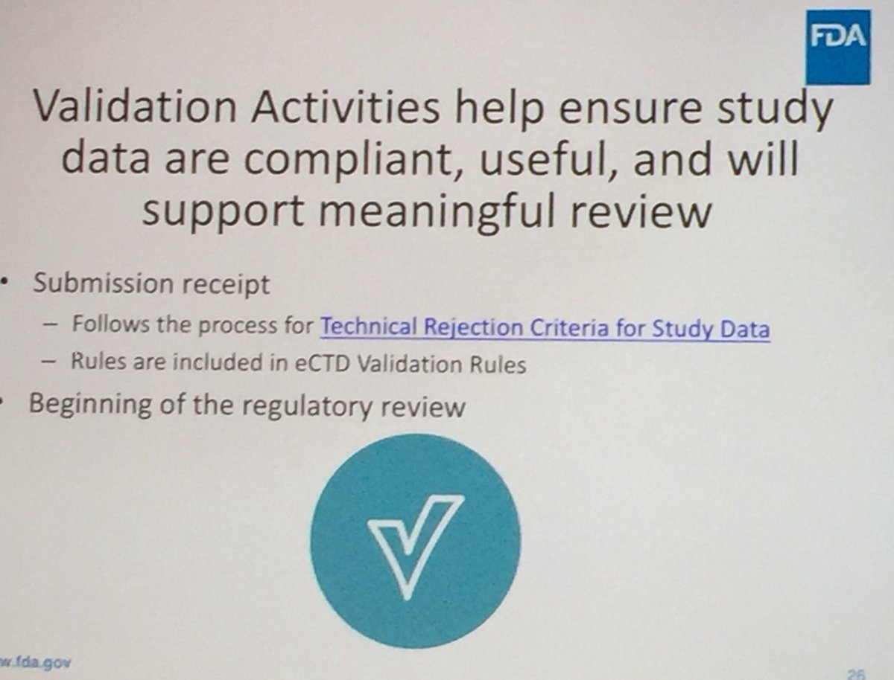
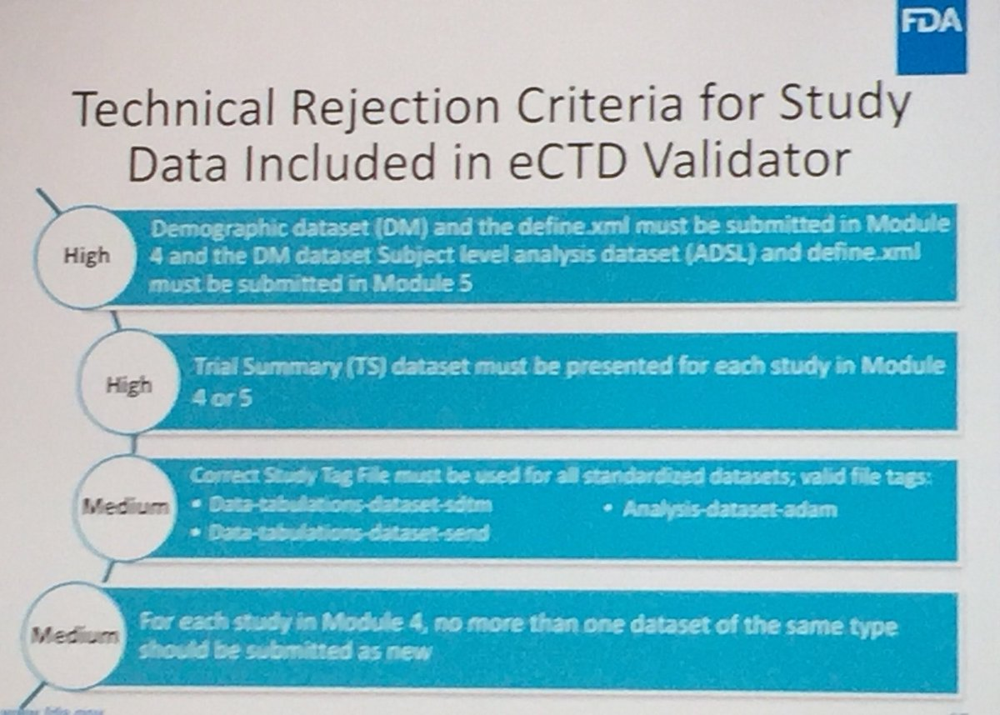
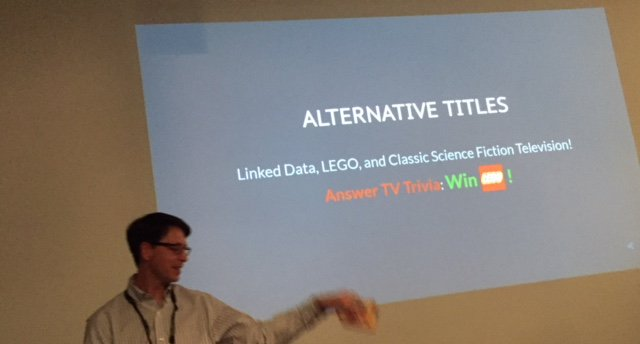
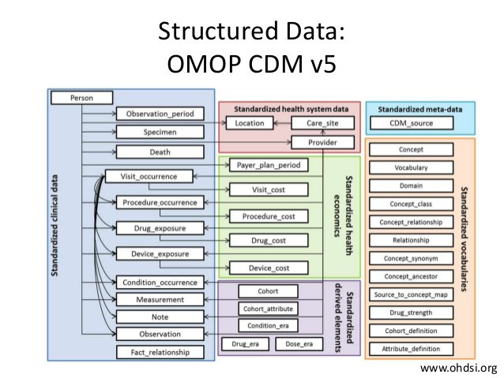
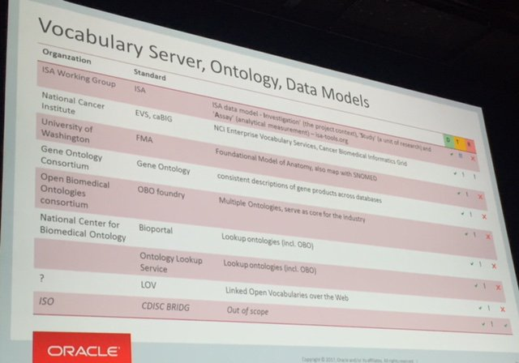

October 2017
GDPR – An issue of hearts and minds, not cyber eiuperspectives.economist.com/technology-inn… "GDPR is about clarifying where PII is in any given organisation"
"GSK Chief Data Officer (CDO) Mark Ramsey, who admits that GSK a laggard within a lagging industry in its approach to leveraging data." twitter.com/cioonline/stat…
Privacy-preserving generative deep neural networks support clinical data sharing biorxiv.org/content/early/…
@mlambrecht Yes, post-sharing efforts required, for many things, incl keeping the SAS MSE #screenonly environment updated, see twitter.com/kerfors/status…
@MCRInformatics So @sjn_16, any ideas on who/where to study post-sharing resource implications similar to your earlier paper? ncbi.nlm.nih.gov/pmc/articles/P…
Restarting the "Picking the Winners: Forecasting Emergent Technology" project, looking at nice @Gephi visualisations his.se/en/Research/in…
@mlambrecht How can "qualified researchers" best work with shared data? See @wilbanks' First, design for data sharing ncbi.nlm.nih.gov/m/pubmed/26939…
Bookmarked: "The role of pragmatism in explaining heterogeneity in meta-analyses of randomised trials: a protocol … ift.tt/2hE1lvj
Advances in Studying Brain Morphology: The Benefits of Open-Access Data frontiersin.org/article/10.338…
I have just join the #FHIR and RDF webinar. Slides: github.com/BD2KOnFHIR/BLE… files: github.com/BD2KOnFHIR/BLE… twitter.com/kerfors/status…
#phuse17 For INDs: must submit data in the data formats listed in the FDA Data Standards Catalog for studies that start after Dec. 17, 2017


Thanks @darth_jozza for the #phuse17 reference to our #LinkedData presentation at @CDISC back in 2012 kerfors.blogspot.co.uk/2012/05/semant…
Will be busy in the #LinkedData #phuse17 workshop phuse.eu/hands-on-works… So less tweets today, meanwhile checkout storify.com/kerfors/phuse-…
Looking forward to tomorrow's #phuse17 Hands-on Workshop Introduction to Linked Data and Graph Databases phuse.eu/hands-on-works…
Interesting paper/nice blog post. Would be good with a look at the time/costs for resources to answer questions etc. once data is shared twitter.com/sjn_16/status/…
Bookmarked: "Exploring changes over time and characteristics associated with data retrieval across individual part… ift.tt/2kE66tu
Bookmarked: "Ethics approval in applications for open-access clinical trial data: An analysis of researcher statem… ift.tt/2xw5JY4
The critique of the "remote desktop" in SAS Multisponsor Environment (MSE) to share data in clinicalstudydatarequest.com mentioned at #phuse17
Yet another interesting combination mentioned by @WayneKubick FHIR resources + detailed CIMI models hl7.org/Special/Commit… #phuse17
One of the apps in SMART on FHIR application mentioned by @WayneKubick #phuse17 apps.smarthealthit.org/app/growth-cha…
HL7 Fast Healthcare Interoperability Resources (FHIR) at #phuse17 @WayneKubick pinpoints the emerging use of RDF w3c.github.io/hcls-fhir-rdf/…
Talking observation ontology w/ @nomini at #phuse17 reminded me of CRL (Clinical Refrence Libarary) slideshare.net/kerfors/design…
Two W3C specifications of interest for clinical data: #SHACL and #SHEX to define "shapes" to validate data morganclaypoolpublishers.com/catalog_Orig/p… #phuse17
More about Johannes #Phuse17 presentation s-cubed-global.com/news-and-artic… twitter.com/kerfors/status…
Interesting #phuse17 paper: Topology-based Clinical Data Mining: Identifying Hidden Patterns in Clinical Data Sets pharmasug.org/proceedings/20…
Wonderful when Johannes shows how a SAS datasets looks like when you open it in a browser. And say - this is data :-) twitter.com/KirstenLangend…
Yet another #LinkedData and #Graph database at #phuse17 This time my previous collegue, Johaness Ulander, now at @scubedglobal
Clinical Trials Data as RDF github.com/phuse-org/CTDa… where we find @NovasTaylor and @nomini's #phuse17 paper github.com/phuse-org/CTDa…
Really enoying @NovasTaylor #LinkedData talk at #phuse17 "Linked data is a lot like LEGO"

Interesting. @OHDSI Achilles was also mentioned at #Phuse17. Many would say BRIDG is CMOP. I do not agree. twitter.com/danhousman/sta…
#phuse17 "Applying the OMOP Common Data Model to Dutch Healthcare Data: A Case Study" mentioned @OHDSI tools e.g ohdsi.org/analytic-tools…

Live blogging from #PhUSE17 conference 9-11 October in Edinburgh. Checkout my Storify: storify.com/kerfors/phuse-…
SyntheticMass and Synthea mentioned at the #phuse17 in a nice presentation "Use of #FHIR in the Generation of Real-world Evidence" twitter.com/HL7/status/855…
The concept of interactive TLFs (iTLF) was mentioned by the presenters. Also the question of mappings needed came up. twitter.com/kerfors/status…
3(3) @AstraZeneca at #phuse17 "Converting Legacy Data to "ADaM-like" Data for Making Efficient Regulatory Response"
2(4) @AstraZeneca at #phuse17 "Harmonizing SDTM at the Source: Designing Collection Instruments that Support Sponsor Standards"
1(4) @AstraZeneca at #phuse17 "REACTing to Data: The Use of
Data Visualisation within Early Clinical Statistical Programming at AstraZeneca"
Data Visualisation within Early Clinical Statistical Programming at AstraZeneca"
Good to see more ontology initiatives mentioned at #phuse17 e.g. @isatools, FMA, GO, ebi.ac.uk/ols/index bioportal.bioontology.org

Excellent to see @OBOFoundry on the list of organisations of "Industry Standards - What Else Exists Beside CDISC" at #phuse17